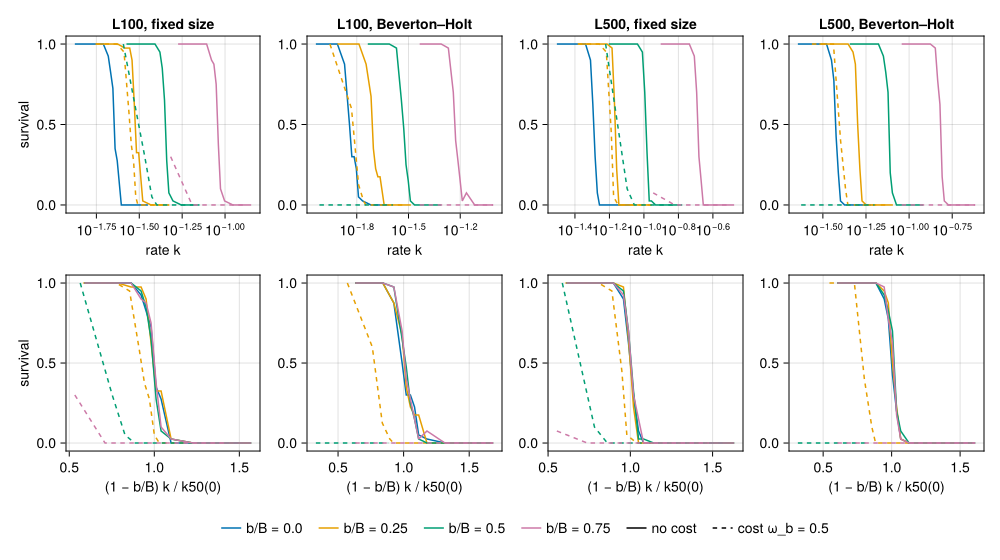
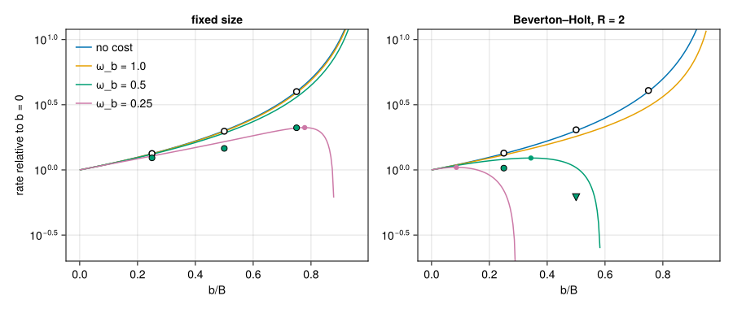
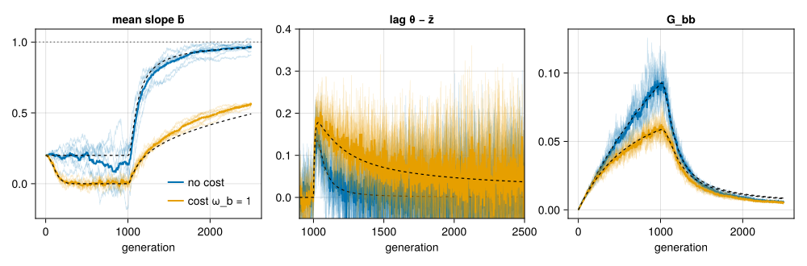
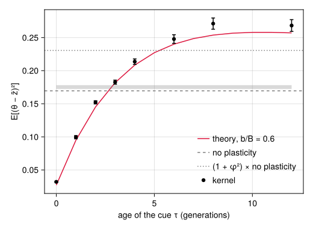

Plasticity and sustainable rates of change
Simon Frost
- Overview
- Setup
- A reaction norm of fixed slope
- An exact correspondence
- Survival against the rate of change
- The cost trade-off
- A heritable reaction norm
- A delayed cue under a fluctuating optimum
- Where next
Overview
The paper’s question is how fast the environment can change before a population that adapts to it genetically goes extinct (Pagel et al. 2025). Genetic change is not the only way to keep up: an individual can respond to the environment it develops in. Phenotypic plasticity is the standard reason a population might track an optimum that moves faster than its genes can follow, and the standard theory of how much it helps, and what it costs, is that of Chevin et al. (2010) for a linear reaction norm, with the evolution of the norm itself treated by Lande (2009).
QTLSim has a linear reaction norm (Julia only, off by default). This vignette shows where it sits in the life cycle, an exact correspondence that makes a plastic population with a perfect cue and no cost a slower-moving non-plastic one, what that means for the rate a population can sustain (from a pre-specified experiment of 12,320 kernel runs, read from its cache), the trade-off a cost of plasticity creates, the evolution of a heritable slope, and what a delayed cue does under a fluctuating optimum.
A caution on sources. The formulas in QTLSim are derived from its own moments recursion, ḡ′ = ḡ + β (θ_t − ḡ − (b/B) θ_{t−τ}), and checked symbolically (validate/symbolic/check_plasticity.jl); the equations of Chevin et al. (2010) were not read (they are images in the article), so this vignette does not claim to reproduce them. Only their qualitative statements were checked: the critical rate rises as |B − b| falls, a cost lowers the population’s growth, and above a threshold cost an intermediate plasticity is best. The design note Phenotypic plasticity gives the details.
Setup
using QTLSim
import Catlab # loads the categorical layer, for run_moments
using CairoMakie, Printf, Random, Statistics
CairoMakie.activate!(type = "png")
L = lifecycle(); g = L.generation # QTSim's generation, Zygotes → Zygotesdevelop⋅select⋅reproduce⋅record⋅rescale⋅mutate⋅swap: Zygotes → ZygotesA reaction norm of fixed slope
The environment ε is measured by the optimum it sets, θ = B ε, with B (OptimumSlope, 1 by default) the environmental sensitivity of selection. An individual’s phenotype is
\[z = g + b\,\varepsilon_{\text{cue}} + e, \qquad \varepsilon_{\text{cue}} = \theta_{t-\tau}/B,\]
with slope b (Plasticity), and a cue that is the environment τ (CueLag) generations before selection; τ = 0 is a perfect cue. A cost of plasticity is stabilising selection on the slope: every fitness is multiplied by exp(−b²/(2ω_b²)), ω_b = PlasticityCostSD (Inf, no cost, by default). For a fixed slope only the ratio φ = b/B matters: the plastic part of the phenotype, φ θ_{t−τ}, is the fraction of the optimum’s displacement that is tracked without any genetic change.
Where is it expressed? In QTSim’s generation the optimum of generation t is set in select, after develop has formed the phenotypes (QTSim’s PopFitness: phenotypes, then the move, then fitness). The environment a perfect cue reports is not known when develop runs, so develop is unchanged (it gives g + e, the phenotype in the reference environment) and select moves the optimum, then expresses the norm, then computes fitness. The plasticity fields are parameters of select:
step_schema(OneTraitModel())[:select](:ω, :θ, :MoveType, :MoveFitnessSD, :MoveFitnessSDGen, :MoveNoiseSD, :MoveAutocorr, :MoveAmplitude, :MovePeriod, :Drift, :Selection, :StandardisePhenotype, :Plasticity, :OptimumSlope, :CueLag, :PlasticityCostSD)so a select step can carry its own slope and cost, and demes can differ in them:
gp = withparams(g; Plasticity = 0.5, PlasticityCostSD = 1.0)develop⋅select(Plasticity = 0.5, PlasticityCostSD = 1.0)⋅reproduce⋅record⋅rescale⋅mutate⋅swap: Zygotes → ZygotesOnly optima with a trajectory of their own are allowed: :continuous, :red_noise, :periodic, or a step’s fixed θ. QTSim’s default :phenotype move (and :fitness) re-anchors the optimum to the current mean phenotype every generation, θ = z̄ + lead, so a plastic shift of the mean would be carried along by the optimum and have no meaning:
try
World(Params(Plasticity = 0.5, MoveType = :phenotype, MoveFitnessSDGen = 100))
catch err
println(sprint(showerror, err))
endArgumentError: Params: plasticity needs an optimum with its own trajectory (MoveType :continuous, :red_noise or :periodic); :phenotype re-anchors the optimum to the mean phenotype every generationAn exact correspondence
With a perfect cue and no cost,
\[z - \theta = g + e - (1 - \varphi)\,\theta,\]
so fitness depends on the genotype and the optimum only through (1 − φ) θ. A plastic population whose optimum moves k per generation is therefore, in distribution and not only at steady state, a non-plastic population whose optimum moves (1 − φ) k. In the kernel it is more than that: for the same seed the two runs draw the same random numbers and make the same decisions. The parameters below are the 100-locus set of the experiment in the next section (rare mutations, as in the paper’s inputs), with a shorter burn-in:
p = Params(PopSize = 1000, Ploidy = 2, NoQTL = 100, PhenotypeVar = 0.03, Heritability = 0.4,
MutationScalar = 0.005, MutationRatePerGamete = 1e-4, InitFitnessSD = 4.0,
RecombPoissonMean = 3.0, MoveType = :continuous, NoGenerations = 3000,
MoveFitnessSDGen = 1000, MoveFitnessSD = 0.02)
plastic = simulate(Params(p; Plasticity = 0.5); seed = 1) # φ = 0.5, k = 0.02
slower = simulate(Params(p; MoveFitnessSD = 0.01); seed = 1) # φ = 0, k = 0.01
lag(o) = o.theta .- o.pheno_mean
@printf("survivors identical in every generation: %s\n", plastic.nsurv == slower.nsurv)
@printf("genetic variance identical in every generation: %s\n", plastic.geno_var == slower.geno_var)
@printf("largest difference in the lag θ − z̄: %.1e\n", maximum(abs.(lag(plastic) .- lag(slower))))
@printf("optimum at the end: %.2f (plastic) and %.2f (slower)\n", plastic.theta[end], slower.theta[end])survivors identical in every generation: true
genetic variance identical in every generation: true
largest difference in the lag θ − z̄: 2.8e-14
optimum at the end: 40.00 (plastic) and 20.00 (slower)The optimum of the plastic run is twice as far away, its mean phenotype too, and everything genetic is identical. Theory says the same: the steady lag behind a trend is (1 − φ) k (V_G + V_s)/V_G (steady_lag), and sustainable_rate, the largest rate at which the deterministic moments recursion persists (mean fitness at the steady lag above Ploidy/PopSize at a fixed size, 1/R under Beverton–Holt), is the rate without plasticity divided by 1 − φ:
win = findall(t -> 2000 <= t <= 2999, plastic.gen)
VG = mean(plastic.geno_var[win])
println("| | kernel lag, generations 2000–2999 | `steady_lag` at the kernel's V_G | `sustainable_rate` |\n|:--|--:|--:|--:|")
for (nm, o, q) in (("φ = 0.5, k = 0.02", plastic, Params(p; Plasticity = 0.5)),
("φ = 0, k = 0.01", slower, Params(p; MoveFitnessSD = 0.01)),
("φ = 0, k = 0.02", nothing, p))
@printf("| %s | %s | %.3f | %.4f |\n", nm, o === nothing ? "" : @sprintf("%.3f", mean(lag(o)[win])),
steady_lag(q; VG), sustainable_rate(q; VG))
end| kernel lag, generations 2000–2999 | steady_lag at the kernel’s V_G | sustainable_rate | |
|---|---|---|---|
| φ = 0.5, k = 0.02 | 1.143 | 1.117 | 0.2536 |
| φ = 0, k = 0.01 | 1.143 | 1.117 | 0.1268 |
| φ = 0, k = 0.02 | 2.234 | 0.1268 |
The kernel’s lag, 1.14 (2.8 phenotypic standard deviations), is 102% of the deterministic steady lag at its own V_G (1.12), and it is the same for the plastic and the slower population. The rest of the vignette is about what can break the correspondence: a cost, a heritable slope, and a cue that is out of date.
Survival against the rate of change
validate/plasticity_rates.jl is a pre-specified experiment (criteria written before the first run, in the script’s header) on the rate a population can sustain. Two synthetic parameter sets within the paper’s priors, with 100 and 500 loci (L100, L500), 1000 diploids, 10,000 generations of stabilising selection, then a continuous move; QTSim’s fixed size and Beverton–Holt with R = 2; b/B = 0, 0.25, 0.5 and 0.75 with a perfect cue, without a cost and with ω_b = 0.5; eleven rates per cell; 40 burn-ins per cell; a run survives if it is alive 2000 generations after the move. Without a cost one burn-in serves all four slopes (the optimum is at the origin before the move, so the plastic part is exactly zero), and the rates are chosen so that the effective rates (1 − b/B) k are the same in every cell. Its 12,320 runs took about 10 hours; this vignette reads them from validate/plasticity_rates.csv.
csv = joinpath(@__DIR__, "..", "..", "validate", "plasticity_rates.csv")
lines_ = readlines(csv)
hdr = Symbol.(split(lines_[1], ','))
runs = map(lines_[2:end]) do l
f = split(l, ',')
(set = Symbol(f[1]), dem = Symbol(f[2]), cost = f[3] == "true", b = parse(Float64, f[4]),
rep = parse(Int, f[5]), rate = parse(Float64, f[6]), keff = parse(Float64, f[7]),
alive = f[8] == "false", vg0 = parse(Float64, f[10]), n0 = parse(Int, f[11]))
end
cell(set, dem, cost, b) = filter(r -> r.set == set && r.dem == dem && r.cost == cost && r.b == b, runs)
SETS, DEMS, SLOPES = (:L100, :L500), (:fixed, :bh), (0.0, 0.25, 0.5, 0.75)
length(runs)12320The half-survival rate k50 of a cell is the script’s estimator: a maximum-likelihood logistic regression of survival on ln k over the cell’s eleven rates, k50 = exp(−a/c).
function logistic(x, y) # logit P(y) = a + c x, by Newton's method
a, c = 0.0, 0.0
xm = mean(x); xc = x .- xm
for _ in 1:100
q = 1 ./ (1 .+ exp.(-clamp.(a .+ c .* xc, -30, 30)))
g1, g2 = sum(y .- q), sum((y .- q) .* xc)
w = q .* (1 .- q) .+ 1e-9
h11, h12, h22 = sum(w), sum(w .* xc), sum(w .* xc .^ 2)
d = h11 * h22 - h12^2
da, dc = (h22 * g1 - h12 * g2) / d, (h11 * g2 - h12 * g1) / d
s = min(1.0, 5 / max(abs(da), abs(dc), 1e-12))
a += s * da; c += s * dc
max(abs(da), abs(dc)) < 1e-10 && break
end
(a - c * xm, c)
end
function k50(rs)
y = [r.alive for r in rs]
(all(y) || !any(y)) && return NaN # survival does not cross one half in the grid
a, c = logistic([log(r.rate) for r in rs], y)
c < 0 ? exp(-a / c) : NaN
end
survival(rs) = (ks = sort(unique(r.rate for r in rs));
(ks, [mean(r.alive for r in rs if r.rate == k) for k in ks]))survival (generic function with 1 method)fig = Figure(size = (1000, 560))
cols = Makie.wong_colors()
titles = Dict((:L100, :fixed) => "L100, fixed size", (:L100, :bh) => "L100, Beverton–Holt",
(:L500, :fixed) => "L500, fixed size", (:L500, :bh) => "L500, Beverton–Holt")
for (j, (set, dem)) in enumerate([(s, d) for s in SETS for d in DEMS])
k0 = k50(cell(set, dem, false, 0.0))
ax1 = Axis(fig[1, j], xscale = log10, title = titles[(set, dem)], xlabel = "rate k",
ylabel = j == 1 ? "survival" : "")
ax2 = Axis(fig[2, j], xlabel = "(1 − b/B) k / k50(0)", ylabel = j == 1 ? "survival" : "")
for (i, b) in enumerate(SLOPES), cost in (false, true)
(cost && b == 0) && continue
rs = cell(set, dem, cost, b)
isempty(rs) && continue
ks, s = survival(rs)
st = cost ? :dash : :solid
lines!(ax1, ks, s, color = cols[i], linestyle = st, label = cost ? nothing : "b/B = $b")
lines!(ax2, (1 - b) .* ks ./ k0, s, color = cols[i], linestyle = st)
end
j == 4 && Legend(fig[3, :], [[LineElement(color = cols[i]) for i in 1:4]; [LineElement(color = :black, linestyle = st) for st in (:solid, :dash)]],
[["b/B = $b" for b in SLOPES]; ["no cost", "cost ω_b = 0.5"]], orientation = :horizontal, framevisible = false)
end
fig
Figure 1: Survival 2000 generations after the move against the rate of change of the optimum, 40 populations per point. Top: against the rate k itself; bottom: against the effective rate (1 − b/B)k, as multiples of the half-survival rate without plasticity. Solid lines: no cost; dashed: cost ω_b = 0.5. Columns: the 100- and 500-locus parameter sets, at a fixed size and under Beverton–Holt with R = 2. Without a cost the four curves of the bottom row coincide, as the correspondence requires.
The top row shows what plasticity buys: the curves move to the right, by more the larger the slope. The bottom row shows why: without a cost (solid lines) survival depends on the effective rate only. The half-survival rates against the prediction 1/(1 − b/B) (criterion P1: within 15%):
println("| cell | k50, b = 0 | b/B = 0.25 | b/B = 0.5 | b/B = 0.75 |\n|:--|--:|--:|--:|--:|")
println("| predicted ratio `1/(1 − b/B)` | | 1.333 | 2.000 | 4.000 |")
K0 = Dict((s, d) => k50(cell(s, d, false, 0.0)) for s in SETS for d in DEMS)
for set in SETS, dem in DEMS
@printf("| %s | %.4f | %s |\n", titles[(set, dem)], K0[(set, dem)],
join((@sprintf("%.3f", k50(cell(set, dem, false, b)) / K0[(set, dem)]) for b in SLOPES[2:end]), " | "))
end| cell | k50, b = 0 | b/B = 0.25 | b/B = 0.5 | b/B = 0.75 |
|---|---|---|---|---|
predicted ratio 1/(1 − b/B) | 1.333 | 2.000 | 4.000 | |
| L100, fixed size | 0.0226 | 1.336 | 1.981 | 3.989 |
| L100, Beverton–Holt | 0.0145 | 1.346 | 2.031 | 4.067 |
| L500, fixed size | 0.0511 | 1.332 | 2.008 | 4.022 |
| L500, Beverton–Holt | 0.0375 | 1.344 | 2.025 | 4.032 |
All twelve cells pass, within 2% of the prediction (the log’s 95% bootstrap intervals are within 1.32–1.38, 1.95–2.07 and 3.93–4.13). That is a check of the implementation, not a test of a theory: the correspondence above is exact, so it must hold whatever the genetics. The lag at equal effective rates (criterion P3) passes in all twelve cells too.
With a cost
With ω_b = 0.5 every fitness is multiplied by plasticity_cost, 0.88, 0.61 and 0.32 for the three slopes, and the correspondence is broken. The pre-specified prediction (P2) was the ratio of sustainable_rate with and without the cost, evaluated at each cell’s mean V_G at the move, to within 25%; under Beverton–Holt at b/B = 0.75 the prediction is that the population dies before the move (R W̄(0) = 2 × 0.997 × 0.32 < 1).
base(set, dem) = Params(; PopSize = 1000, Ploidy = 2, NoQTL = set == :L100 ? 100 : 500, RecombPoissonMean = 3.0,
PhenotypeVar = set == :L100 ? 0.03 : 0.05, Heritability = set == :L100 ? 0.4 : 0.3,
MutationScalar = set == :L100 ? 0.005 : 0.008, MutationRatePerGamete = 1e-4,
InitFitnessSD = set == :L100 ? 4.0 : 3.0, MoveType = :continuous,
(dem == :bh ? (Demography = :beverton_holt, GrowthRate = 2.0) : (;))...)
meanfin(v) = (w = filter(isfinite, collect(v)); isempty(w) ? NaN : mean(w))
println("| cell | b/B | V_G at the move, no cost | with cost | N at the move, with cost | burn-ins dead | k50 ratio, observed | predicted | observed/predicted | P2 |")
println("|:--|--:|--:|--:|--:|--:|--:|--:|--:|:--|")
p2 = Dict{Any,String}()
for set in SETS, dem in DEMS, b in SLOPES[2:end]
p0 = base(set, dem)
v0 = mean(r.vg0 for r in cell(set, dem, false, 0.0))
rs = cell(set, dem, true, b)
vc = meanfin(r.vg0 for r in rs)
nc = mean(r.n0 for r in rs)
dead = mean(r.n0 == 0 for r in rs)
pred = sustainable_rate(Params(p0; Plasticity = b, PlasticityCostSD = 0.5); VG = isfinite(vc) ? vc : v0) /
sustainable_rate(p0; VG = v0)
obs = k50(rs) / K0[(set, dem)]
v = pred == 0 ? (dead >= 0.9 ? "PASS" : "FAIL") : (isfinite(obs) && 0.75 <= obs / pred <= 1.25 ? "PASS" : "FAIL")
p2[(set, dem, b)] = v
@printf("| %s | %.2f | %.4f | %s | %.0f | %.0f%% | %s | %.3f | %s | %s |\n", titles[(set, dem)], b, v0,
isfinite(vc) ? @sprintf("%.4f", vc) : "–", nc, 100dead,
isfinite(obs) ? @sprintf("%.3f", obs) : (pred == 0 ? "–" : "below 0.63"), pred,
isfinite(obs) && pred > 0 ? @sprintf("%.2f", obs / pred) : "–", v)
end| cell | b/B | V_G at the move, no cost | with cost | N at the move, with cost | burn-ins dead | k50 ratio, observed | predicted | observed/predicted | P2 |
|---|---|---|---|---|---|---|---|---|---|
| L100, fixed size | 0.25 | 0.1360 | 0.1159 | 1000 | 0% | 1.237 | 1.125 | 1.10 | PASS |
| L100, fixed size | 0.50 | 0.1360 | 0.0915 | 1000 | 0% | 1.463 | 1.292 | 1.13 | PASS |
| L100, fixed size | 0.75 | 0.1360 | 0.0568 | 1000 | 0% | 2.106 | 1.515 | 1.39 | FAIL |
| L100, Beverton–Holt | 0.25 | 0.1283 | 0.0997 | 860 | 0% | 1.032 | 0.939 | 1.10 | PASS |
| L100, Beverton–Holt | 0.50 | 0.1283 | 0.0356 | 346 | 0% | below 0.63 | 0.292 | – | FAIL |
| L100, Beverton–Holt | 0.75 | 0.1283 | – | 0 | 100% | – | 0.000 | – | PASS |
| L500, fixed size | 0.25 | 0.3233 | 0.3057 | 1000 | 0% | 1.255 | 1.249 | 1.00 | PASS |
| L500, fixed size | 0.50 | 0.3233 | 0.2356 | 1000 | 0% | 1.546 | 1.405 | 1.10 | PASS |
| L500, fixed size | 0.75 | 0.3233 | 0.1493 | 1000 | 0% | 2.131 | 1.688 | 1.26 | FAIL |
| L500, Beverton–Holt | 0.25 | 0.3200 | 0.2720 | 845 | 0% | 1.064 | 1.028 | 1.04 | PASS |
| L500, Beverton–Holt | 0.50 | 0.3200 | 0.1081 | 330 | 0% | below 0.63 | 0.357 | – | FAIL |
| L500, Beverton–Holt | 0.75 | 0.3200 | – | 0 | 100% | – | 0.000 | – | PASS |
P2 passes in 8 of 12 cells and fails in 4, as in validate/plasticity_rates.log. At a fixed size the cost is less harmful than predicted, increasingly so at larger slopes (observed/predicted up to 1.39), and the two fixed-size cells at b/B = 0.75 fail on that side. Under Beverton–Holt at b/B = 0.5 every population died even at the lowest rate of the grid, so the half-survival rate is not bracketed (it is below 0.63 of k50(0)); the grid had been placed using the nominal V_G, and the prediction with the realised V_G, 0.29–0.36, lies below it, in the same direction as the observation.
What the table shows directly is that the cost lowers the genetic variance at the move, before the optimum has moved at all: by 5–58% at a fixed size and by 15–72% under Beverton–Holt, where the population also shrinks (to about 340 at b/B = 0.5). That lost variance seemed the obvious reason P2 fails, but a later pre-specified test refutes it (validate/plasticity_erosion.jl, fresh seeds, all four failed cells): populations that pay the cost only before the move start it with 28–81% of the variance yet sustain 0.88–0.99 of the no-cost k50, so the pre-move loss accounts for only 3–9% of the cost’s effect. The cost does its damage after the move, 2–7 times more strongly than the fitness-margin term of sustainable_rate predicts; the correspondence itself plays no part (the same constant fitness cost without plasticity gives the same k50, within 2%).
The likely reason is a known feedback that sustainable_rate leaves out: the lag and the cost both lower the number of breeders, drift then lowers V_G, and the lag grows. Bürger and Lynch (1995) described it from simulations as the main reason their fixed-variance critical rate overestimates persistence, Xu and Shen (2026) define a critical rate as the maximum over steady states with drift-reduced variance (continuous time, logistic growth), and Polechová and Barton (2015) and Polechová (2026) treat the analogue along spatial gradients. drift_critical_rate is a discrete-generation implementation matched to QTSim’s life cycle. To first order a constant log cost c lowers either kind of critical rate by a fraction c/M, M being twice the lag load at the critical lag; for sustainable_rate the square root expands to 1 − c/(2 ln(W̄₀/W_min)), the same linear form. The difference is the scale: drift makes the critical lag, and so M, 2.5–7 times smaller in the cells tested, so the same cost removes several times more of the rate. In a later pre-specified test (validate/critical_rate.jl, fresh seeds, observed cost ratios down to 0.25) a ratio linear in the cost fitted the kernel’s k50(c)/k50(0) better than a square root in 8 of 8 groups, drift_critical_rate’s ratio was within 0.054 in 24 of 24 cells, and sustainable_rate’s was within tolerance in 0 of 24.
The cost trade-off
Without a cost, more plasticity is always better, and at b = B the population tracks the optimum without any genetic change. A cost changes that. At the steady lag the mean fitness is
\[\bar W(\lambda) = c\, e^{-b^2/(2\omega_b^2)}\,\frac{\omega}{\sqrt{s}}\, e^{-\lambda^2/(2s)},\qquad s = \omega^2 + V_G + V_E,\]
and the largest sustainable rate is
\[k_{\max} = \frac{V_G}{s}\,\frac{\sqrt{2s\,\big(\ln(\bar W_0/W_{\min}) - b^2/(2\omega_b^2)\big)}}{|1 - b/B|},\]
with W̄₀ the mean fitness at no lag without a cost and W_min the threshold: Ploidy/N at a fixed size, 1/R under Beverton–Holt (sustainable_rate). Plasticity divides the rate the genotype must supply by 1 − b/B, and the cost eats into the logarithmic “headroom” ln(W̄₀/W_min). When the headroom is large the gain wins up to large slopes; when it is small the cost wins early, and an intermediate slope is best. A fixed size of 1000 diploids has a headroom of ln(500 W̄₀) ≈ 6; Beverton–Holt with R = 2 has ln(2 W̄₀) ≈ 0.7. plasticity_cost gives the factor:
pc = Params(base(:L100, :fixed); PlasticityCostSD = 0.5)
[plasticity_cost(pc; b) for b in SLOPES]4-element Vector{Float64}:
1.0
0.8824969025845955
0.6065306597126334
0.32465246735834974bs = range(0, 0.95, 200)
fig = Figure(size = (900, 380))
for (j, dem) in enumerate(DEMS)
p0 = base(:L100, dem)
v0 = mean(r.vg0 for r in cell(:L100, dem, false, 0.0))
r0 = sustainable_rate(p0; VG = v0)
ax = Axis(fig[1, j], xlabel = "b/B", ylabel = j == 1 ? "rate relative to b = 0" : "", yscale = log10,
title = dem == :fixed ? "fixed size" : "Beverton–Holt, R = 2")
for (i, ωb) in enumerate((Inf, 1.0, 0.5, 0.25))
r = [sustainable_rate(Params(p0; PlasticityCostSD = ωb); VG = v0, b) / r0 for b in bs]
ok = r .> 0
lines!(ax, bs[ok], r[ok], color = cols[i], label = isinf(ωb) ? "no cost" : "ω_b = $ωb")
isinf(ωb) || (m = argmax(r); m < length(bs) && scatter!(ax, [bs[m]], [r[m]], color = cols[i]))
end
scatter!(ax, collect(SLOPES[2:end]), [k50(cell(:L100, dem, false, b)) / K0[(:L100, dem)] for b in SLOPES[2:end]],
color = :white, strokecolor = :black, strokewidth = 1.5, markersize = 10)
obs = [k50(cell(:L100, dem, true, b)) / K0[(:L100, dem)] for b in SLOPES[2:end]]
for (b, o) in zip(SLOPES[2:end], obs)
if isfinite(o)
scatter!(ax, [b], [o], color = cols[3], strokecolor = :black, strokewidth = 1, markersize = 10)
elseif dem == :bh && b == 0.5
scatter!(ax, [b], [0.63], marker = :dtriangle, color = cols[3], strokecolor = :black, strokewidth = 1, markersize = 12)
end
end
ylims!(ax, 0.2, 12)
j == 1 && axislegend(ax, position = :lt, framevisible = false)
end
fig
Figure 2: The sustainable rate with plasticity relative to that without, against the slope b/B, for the 100-locus set at a fixed size (left) and under Beverton–Holt with R = 2 (right), at the VG of the populations without a cost. Lines: sustainablerate for no cost and three costs; small dots mark the best slope where it lies below B. Points: the experiment’s half-survival rates relative to b = 0, without a cost (open) and with ω_b = 0.5 (filled); under Beverton–Holt the populations with cost at b/B = 0.5 all died at the lowest rate tried (plotted at that bound, triangle) and at 0.75 before the move (plotted at 0).
At a fixed size a cost of ω_b = 0.5 never uses up the headroom before b = B (b²/(2ω_b²) < 2), so the sustainable rate still grows without bound as the slope approaches B; with ω_b = 0.25 the best slope is 0.78. Under Beverton–Holt, with a headroom of about 0.7, a cost of ω_b = 1 still leaves the rate unbounded (b²/2 < 0.5), but ω_b = 0.5 puts the best slope at 0.34 and ω_b = 0.25 at 0.09. The experiment agrees in direction. At a fixed size the half-survival rate with the cost rose with the slope across the grid (1.24, 1.46 and 2.11 times that at b = 0 for the 100-locus set), more than the prediction. Under Beverton–Holt the slope 0.25 helped a little (1.03 times), 0.5 was fatal at every rate tried, and 0.75 killed every population before the move: an intermediate plasticity is best, and the demography decides where.
A heritable reaction norm
With ReactionNorm = true and NoTraits = 2 the slope is heritable: the two heritable values of the model of several traits (vignette Several traits and pleiotropy) are the elevation a = g₁ and the deviation of the slope from Plasticity, b = Plasticity + g₂. Selection acts on the one phenotype z = a + b ε + e and the cost on the individual’s slope. It is TraitModel(2) with a linear map (a, b) ↦ a + b ε, which changes with the environment, composed before selection (ReactionNormModel()); the kernel and the moments lowering have it, the Eidos lowering does not.
Without a cost the slope responds in proportion to ε (reaction_norm_response: Δ(ā, b̄) = G v λ/s, v = (1, ε)), so it evolves only away from the reference environment, and under a sustained move the mean slope approaches B. With a cost, in a constant environment the only equilibrium has b̄ = 0 (genetic assimilation, Lande 2009), and under a sustained move the slope settles below B. The parameters are those of validate/reaction_norm.jl (1000 diploids, 50 loci in the Gaussian regime, initial slope 0.2, 1000 generations of stabilising selection at ε = 0, then the optimum moves 0.02 per generation for 1500 generations), with 8 runs per scenario instead of 40:
rn = Params(NoGenerations = 2500, PopSize = 1000, Ploidy = 2, NoQTL = 50, MutationRatePerGamete = 0.01,
MoveType = :continuous, MoveFitnessSDGen = 1000, MoveFitnessSD = 0.02, RecombPoissonMean = 3.0,
InitFitnessSD = 1.0, PhenotypeVar = 1.0, Heritability = 0.5)
Vm = muteVar(rn)
norm_params(ωb) = Params(rn; NoTraits = 2, ReactionNorm = true, Plasticity = 0.2,
MutCov = [Vm 0.0; 0.0 Vm / 4], PlasticityCostSD = ωb)
scen = [("no cost", Inf), ("cost ω_b = 1", 1.0)]
njobs = [(i, r) for i in eachindex(scen) for r in 1:8]
nruns = Vector{Any}(undef, length(njobs))
Threads.@threads :greedy for j in eachindex(njobs)
i, r = njobs[j]
nruns[j] = simulate(norm_params(scen[i][2]); seed = 31_000 + 100i + r)
end
nmom = [run_moments(norm_params(ωb); erosion = true, loci = :multilocus) for (_, ωb) in scen]
kruns(i) = [nruns[j] for j in eachindex(njobs) if njobs[j][1] == i]
slope(o) = [m[2] for m in o.trait_mean]
nlag(o) = o.theta .- [m[1] for m in o.trait_mean]
Gbb(o) = [G[2, 2] for G in o.gmatrix];fig = Figure(size = (1000, 330))
axs = [Axis(fig[1, j], xlabel = "generation", title = t) for (j, t) in enumerate(("mean slope b̄", "lag θ − z̄", "G_bb"))]
for (i, (nm, _)) in enumerate(scen)
rs = kruns(i)
for (ax, f) in zip(axs, (slope, nlag, Gbb))
for o in rs
lines!(ax, 1:2500, f(o), color = (cols[i], 0.2), linewidth = 0.6)
end
lines!(ax, 1:2500, mean(f.(rs)), color = cols[i], linewidth = 2, label = nm)
lines!(ax, 1:2500, f(nmom[i]), color = :black, linestyle = :dash, linewidth = 1.2)
end
end
hlines!(axs[1], [1.0], color = :grey, linestyle = :dot)
xlims!(axs[2], 900, 2500); ylims!(axs[2], -0.05, 0.4)
axislegend(axs[1], position = :rb, framevisible = false)
fig
Figure 3: A heritable reaction norm under a sustained move from generation 1000. Left: the mean slope; middle: the lag θ − z̄; right: the slope’s genetic variance Gbb. Thin lines: each kernel run; thick: their mean; dashed black: the moments lowering (multilocus Gaussian with drift). Blue: no cost; orange: cost ωb = 1. The optimum’s slope on the environment is B = 1.
println("| | mean slope, generation 1250 | 1500 | 2000 | 2500 | lag at 2500 |\n|:--|--:|--:|--:|--:|--:|")
for (i, (nm, _)) in enumerate(scen)
rs = kruns(i)
@printf("| %s, kernel (8 runs) | %s | %.3f |\n", nm,
join((@sprintf("%.3f", mean(slope(o)[t] for o in rs)) for t in (1250, 1500, 2000, 2500)), " | "),
mean(mean(nlag(o)[2451:2500]) for o in rs))
@printf("| %s, moments | %s | %.3f |\n", nm,
join((@sprintf("%.3f", slope(nmom[i])[t]) for t in (1250, 1500, 2000, 2500)), " | "),
mean(nlag(nmom[i])[2451:2500]))
end| mean slope, generation 1250 | 1500 | 2000 | 2500 | lag at 2500 | |
|---|---|---|---|---|---|
| no cost, kernel (8 runs) | 0.733 | 0.855 | 0.938 | 0.968 | 0.002 |
| no cost, moments | 0.772 | 0.883 | 0.941 | 0.961 | 0.001 |
| cost ω_b = 1, kernel (8 runs) | 0.240 | 0.347 | 0.475 | 0.562 | 0.044 |
| cost ω_b = 1, moments | 0.216 | 0.307 | 0.415 | 0.493 | 0.037 |
Without a cost the mean slope climbs from 0.2 toward B = 1 and the lag, after a peak early in the move, falls toward zero: with heritable, cost-free plasticity this model has no critical rate, only a transient. With the cost the slope is first drawn to zero during the stationary phase (genetic assimilation), rises more slowly under the move and stays well below B, and the lag stays larger. In both the slope’s genetic variance is used up as the slope responds. validate/reaction_norm.jl makes this comparison with 40 runs and passes 28 of its 30 pre-specified criteria; the two failures are the quasi-steady lag formula (reaction_norm_lag) late in the cost-free move, where the lag has fallen to 0.003 and below and the ratio is noise:
logf = joinpath(@__DIR__, "..", "..", "validate", "reaction_norm.log")
if isfile(logf)
for l in readlines(logf)
(occursin("C2 FAIL", l) || occursin("criteria pass", l)) && println(" ", strip(l))
end
endquasi-steady lag at the kernel's own G, slope and environment 0.0017; kernel/it 1.870 C2 FAIL
quasi-steady lag at the kernel's own G, slope and environment 0.0011; kernel/it -0.769 C2 FAIL
28 of 30 criteria pass (1.3 min)A delayed cue under a fluctuating optimum
A cue that is τ generations old makes no difference to the steady lag behind a trend: the genotype makes up the constant shortfall. It matters when the optimum fluctuates. With red noise (MoveType = :red_noise: an AR(1) optimum of standard deviation σ, autocorrelation ρ) the lag with plasticity is λ_t = L_t − φ L_{t−τ}, with L the lag without plasticity, so
\[\operatorname{Var}\lambda = (1 + \varphi^2)\,\Gamma(0) - 2\varphi\,\Gamma(\tau),\]
with Γ the autocovariance of L (red_noise_lag_var with b, B and τ; red_noise_lag_autocov). A perfect cue scales the variance by (1 − φ)²; a cue so old that the environment has forgotten it (ρ^τ → 0) makes plasticity add noise, 1 + φ² times the variance without plasticity. In between there is a delay at which plasticity stops helping.
pr = Params(PopSize = 500, Ploidy = 2, NoQTL = 10, PhenotypeVar = 1.0, Heritability = 0.5,
MutationScalar = 0.01, MutationRatePerGamete = 0.02, InitFitnessSD = 1.5,
NoGenerations = 3000, MoveFitnessSDGen = 1000, MoveFitnessSD = 0.0,
MoveType = :red_noise, MoveNoiseSD = 0.5, MoveAutocorr = 0.8)
φ = 0.6
τs = [0, 1, 2, 3, 4, 6, 8, 12]
rjobs = [(b, τ, r) for (b, τ) in vcat([(0.0, 0)], [(φ, τ) for τ in τs]) for r in 1:6]
rres = Vector{Any}(undef, length(rjobs))
Threads.@threads :greedy for j in eachindex(rjobs)
b, τ, r = rjobs[j]
o = simulate(Params(pr; Plasticity = b, CueLag = τ); seed = 7000 + j)
w = findall(t -> 1500 <= t <= 2999, o.gen)
rres[j] = (; b, τ, lag2 = mean((o.theta[w] .- o.pheno_mean[w]) .^ 2), VG = mean(o.geno_var[w]))
end
Vs = selection_variance(pr)
VGk = mean(r.VG for r in rres)
th(b, τ) = red_noise_lag_var(pr.MoveNoiseSD, pr.MoveAutocorr; VG = VGk, Vs, b, τ)
obs(b, τ) = (v = [r.lag2 for r in rres if r.b == b && r.τ == τ]; (mean(v), std(v) / sqrt(length(v))));fig = Figure(size = (520, 380))
ax = Axis(fig[1, 1], xlabel = "age of the cue τ (generations)", ylabel = "E[(θ − z̄)²]")
τf = 0:12
lines!(ax, τf, [th(φ, τ) for τ in τf], color = :crimson, label = "theory, b/B = $φ")
m0, s0 = obs(0.0, 0)
band!(ax, [0, 12], [m0 - s0, m0 - s0], [m0 + s0, m0 + s0], color = (:grey, 0.3))
hlines!(ax, [th(0.0, 0)], color = :grey, linestyle = :dash, label = "no plasticity")
hlines!(ax, [(1 + φ^2) * th(0.0, 0)], color = :grey, linestyle = :dot, label = "(1 + φ²) × no plasticity")
mo = [obs(φ, τ) for τ in τs]
errorbars!(ax, τs, first.(mo), last.(mo), color = :black, whiskerwidth = 6)
scatter!(ax, τs, first.(mo), color = :black, label = "kernel")
axislegend(ax, position = :rb, framevisible = false)
fig
Figure 4: The mean squared lag behind red noise (σ = 0.5, ρ = 0.8) with a reaction norm of slope b/B = 0.6, against the age τ of the cue. Line: rednoiselagvar at the kernel’s mean VG; points: kernel, 6 runs each (mean ± SE over generations 1500–2999); grey: without plasticity, theory (dashed) and kernel (band, ± SE). Illustrative, not a pre-specified validation.
With a perfect cue plasticity cuts the mean squared lag to 0.032 from 0.175 without (theory 0.027 and 0.170). Plasticity stops helping once the cue is 3 generations old, and at 12 generations it is 52% worse than none, beyond the limit 1 + φ² (36% worse) for a very old cue, because the lag’s autocovariance Γ(12) is negative: an old cue is anticorrelated with the present lag. The kernel lies 0–18% above the deterministic theory: the theory leaves out the drift of the mean and the sampling error of the recorded mean, which add to the lag (as for several traits in vignette 13). This is an illustration with a few runs, not a validation: a delayed cue has not been tested against the theory in a pre-specified experiment.
The same holds for a periodic optimum, where expected_lag2 multiplies the squared amplitude of the lag by 1 + φ² − 2φ cos(2πτ/P): a cue half a period old doubles down on the wrong phase. And lag_load adds the cost b²/(2ω_b²) to the load of the lag, so with a cost and an unreliable cue the best slope is smaller still.
Where next
- The cost’s effect on the sustainable rate was predicted from the deterministic threshold at the realised
V_G, and failed in 4 of 12 cells. A prediction that allows for the extra drift a cost causes, or for the spectrum of segregating mutations under a moving optimum (run_moments(…; loci = :spectrum)), has not been tried. - A heritable norm under fluctuating environments is the setting of the plasticity-first and genetic-assimilation literature (Lande 2009); the kernel and the moments lowering can run it, but nothing here has validated it, and it has no SLiM lowering.
- Not validated: a delayed cue in a pre-specified test, plasticity with fecundity selection, and plasticity in metapopulations with migration (a migrant expresses the norm in the deme it develops in;
withparams(g; Plasticity = …)gives demes their own slopes).
Bürger, Reinhard, and Michael Lynch. 1995. “Evolution and Extinction in a Changing Environment: A Quantitative-Genetic Analysis.” Evolution 49 (1): 151–63. https://doi.org/10.1111/j.1558-5646.1995.tb05967.x.
Chevin, Luis-Miguel, Russell Lande, and Georgina M. Mace. 2010. “Adaptation, Plasticity, and Extinction in a Changing Environment: Towards a Predictive Theory.” PLoS Biology 8 (4): e1000357. https://doi.org/10.1371/journal.pbio.1000357.
Lande, Russell. 2009. “Adaptation to an Extraordinary Environment by Evolution of Phenotypic Plasticity and Genetic Assimilation.” Journal of Evolutionary Biology 22 (7): 1435–46. https://doi.org/10.1111/j.1420-9101.2009.01754.x.
Pagel, Mark, Jacob D. Gardner, and Andrew Meade. 2025. “Quantitative-Genetic Analysis of Directional Adaptation Suggests Low Maximum Sustainable Rates of Change in Agreement with Data from Field Populations.” Scientific Reports 15. https://doi.org/10.1038/s41598-025-24445-2.
Polechová, Jitka. 2026. “Evolution of Species’ Range and Niche in Changing Environments.” Proceedings of the National Academy of Sciences of the USA 123 (19): e2604510123. https://doi.org/10.1073/pnas.2604510123.
Polechová, Jitka, and Nicholas H. Barton. 2015. “Limits to Adaptation Along Environmental Gradients.” Proceedings of the National Academy of Sciences of the USA 112 (20): 6401–6. https://doi.org/10.1073/pnas.1421515112.
Xu, Kuangyi, and Hao Shen. 2026. Eco-Evolutionary Feedbacks Generate Bistability in Population Persistence Under Gradual Environmental Change. bioRxiv preprint.